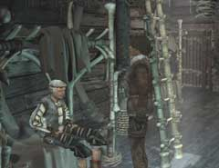
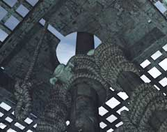

|
船に移動してから
船の中へ移動することに成功したあなたは、イワンを追い出すことに専念しなくてはならない。 追い出すと言っても、弁護士らしく説得する必要はない。問答無用で船から突き落とすのだ。もう、氷山へ戻ることはできない。船の中にあるものだけで解決してみよう。 ・イワンを船から突き落とす

・船についても協力してくれる人はいない ・ハンスはまともに動けず、ユーキーは眠っている ・新しく移動できる場所にヒントがあるだろう

・イワンを後ろから突き落とすことはできない ・イワンは帆のそばをうろうろしているので、それを利用しよう ・帆を張るにはどうしたらよいか
| << 前へ |
|